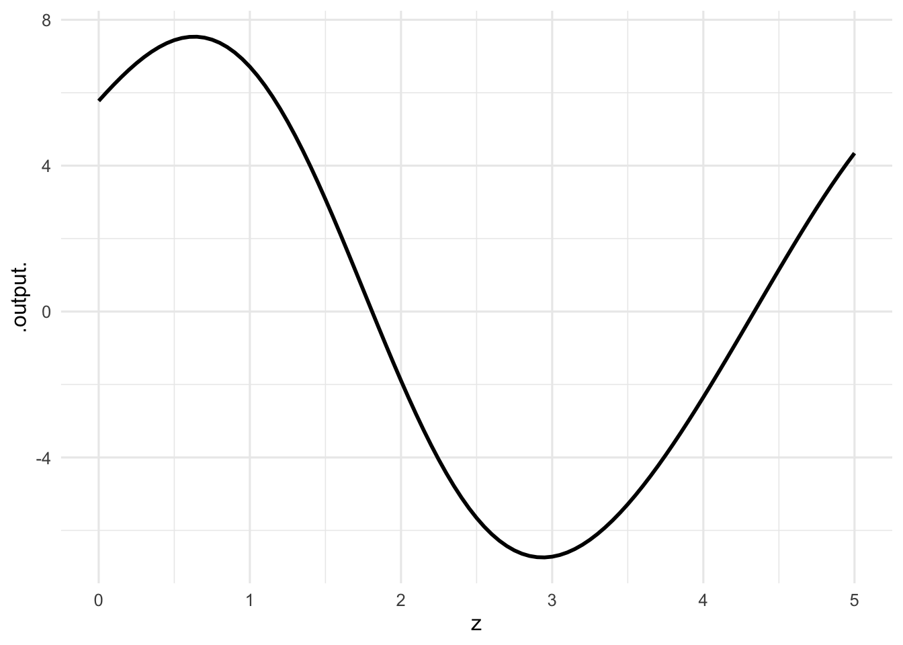
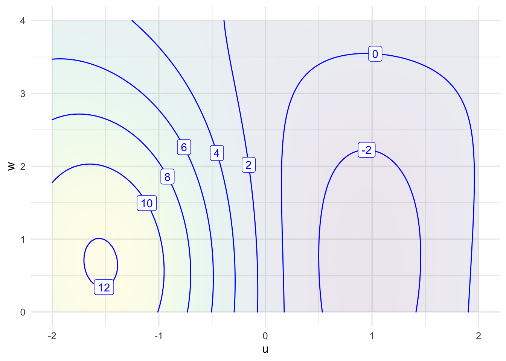
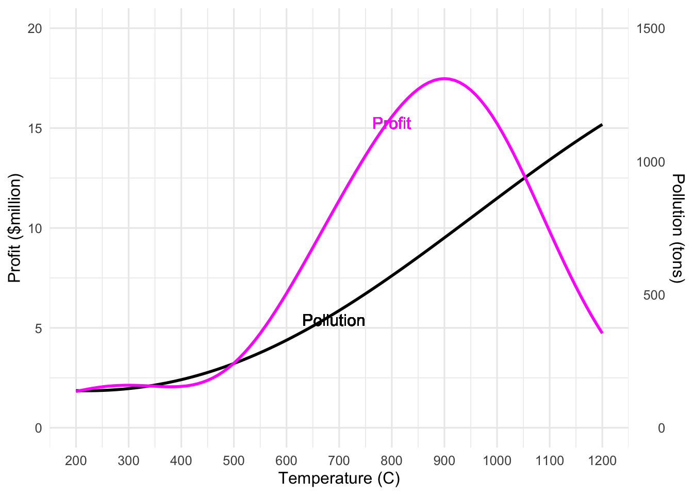

Quantitative Argumentation
Chapter 10 Drill Questions
Note1.
Exercise 1
- Which of the following choices are closest to the argmin of the function displayed in the graph?
- Which is closest to the maximum of the function?
- Which is closest to the argmax of the function?
2.
Exercise 2

- Which of the following is closest to the minimum of the function?
- Which of the following is closest to the argmax of the function?
- Which of the following is closest to the argmin of the function?
3.
Exercise 3 The two graphs below show two imagined competing objective functions. One represents pollution from a factory as a function of the chemical processing temperature, the other represents the profit, which also depends on the chemical processing temperature.
pollution <- doodle_fun( ~ temp, seed = 123)
profit <- doodle_fun( ~ temp, seed = 456)
slice_plot(15+pollution((temp-500)/600) ~ temp,
domain(temp = 200:1200), label_text="Pollution", label_x= 0.5) |>
slice_plot(profit(20*(((300 + temp))/2500)-8) ~ temp, color="magenta", label_text="Profit", label_x = 0.6) |>
gf_refine(
scale_x_continuous(limits=c(200,1200),
breaks=seq(200,1200,100)),
scale_y_continuous(limits = c(0, 20),
name = "Profit ($million)",
sec.axis = sec_axis(~. * 75 , name="Pollution (tons)")) )|>
gf_theme(theme_minimal(base_size=12)) |>
gf_labs(x = "Temperature (C)") 
- Which temperature gives the highest profit?
- What is the technical name for that highest-profit temperature?
- What is the technical name for the highest profit?
- What is the level of pollution when the profit is maximized? (Pick the closest.)
- If the only concern were profit, the factory would operate at 900 C. By operating at a somewhat lower temperature, say 700 C, the profit would be reduced but pollution would also be lower.
The change in profit moving from 900 C to 700 C is about negative $6 million. What’s the change in pollution when for the move from 900 C to 700 C?
- Moving from 900 C to 700 C effectively pays $6 million for a pollution reduction of 400 tons. What’s the shadow price for lowering pollution?
NoteKey vocabulary
Two of the following are valid descriptions of argmax. The other three are not. Mark both of the VALID descriptions.
devoirs3::devoirs_selection(
label = "argmax-10-two",
question = "Two of the following are valid descriptions of argmax. The other three are not. Mark both of the VALID descriptions.",
answers = argmax_10_two_choices,
multiple = TRUE
)()Two of the following are valid descriptions of argmin. The other three are not. Mark both of the VALID descriptions.
devoirs3::devoirs_selection(
label = "argmin-10-two",
question = "Two of the following are valid descriptions of argmin. The other three are not. Mark both of the VALID descriptions.",
answers = argmin_10_two_choices,
multiple = TRUE
)()Two of the following are valid descriptions of dominates. The other three are not. Mark both of the VALID descriptions.
devoirs3::devoirs_selection(
label = "dominates-10-two",
question = "Two of the following are valid descriptions of dominates. The other three are not. Mark both of the VALID descriptions.",
answers = dominates_10_two_choices,
multiple = TRUE
)()Two of the following are valid descriptions of incommensurate. The other three are not. Mark both of the VALID descriptions.
devoirs3::devoirs_selection(
label = "incommensurate-10-two",
question = "Two of the following are valid descriptions of incommensurate. The other three are not. Mark both of the VALID descriptions.",
answers = incommensurate_10_two_choices,
multiple = TRUE
)()Two of the following are valid descriptions of maximum. The other three are not. Mark both of the VALID descriptions.
devoirs3::devoirs_selection(
label = "maximum-10-two",
question = "Two of the following are valid descriptions of maximum. The other three are not. Mark both of the VALID descriptions.",
answers = maximum_10_two_choices,
multiple = TRUE
)()Two of the following are valid descriptions of minimum. The other three are not. Mark both of the VALID descriptions.
devoirs3::devoirs_selection(
label = "minimum-10-two",
question = "Two of the following are valid descriptions of minimum. The other three are not. Mark both of the VALID descriptions.",
answers = minimum_10_two_choices,
multiple = TRUE
)()Two of the following are valid descriptions of objective function. The other three are not. Mark both of the VALID descriptions.
devoirs3::devoirs_selection(
label = "objective-function-10-two",
question = "Two of the following are valid descriptions of objective function. The other three are not. Mark both of the VALID descriptions.",
answers = objective_function_10_two_choices,
multiple = TRUE
)()Two of the following are valid descriptions of shadow price. The other three are not. Mark both of the VALID descriptions.
devoirs3::devoirs_selection(
label = "shadow-price-10-two",
question = "Two of the following are valid descriptions of shadow price. The other three are not. Mark both of the VALID descriptions.",
answers = shadow_price_10_two_choices,
multiple = TRUE
)()Two of the following are valid descriptions of trade-off. The other three are not. Mark both of the VALID descriptions.
devoirs3::devoirs_selection(
label = "trade-off-10-two",
question = "Two of the following are valid descriptions of trade-off. The other three are not. Mark both of the VALID descriptions.",
answers = trade_off_10_two_choices,
multiple = TRUE
)()